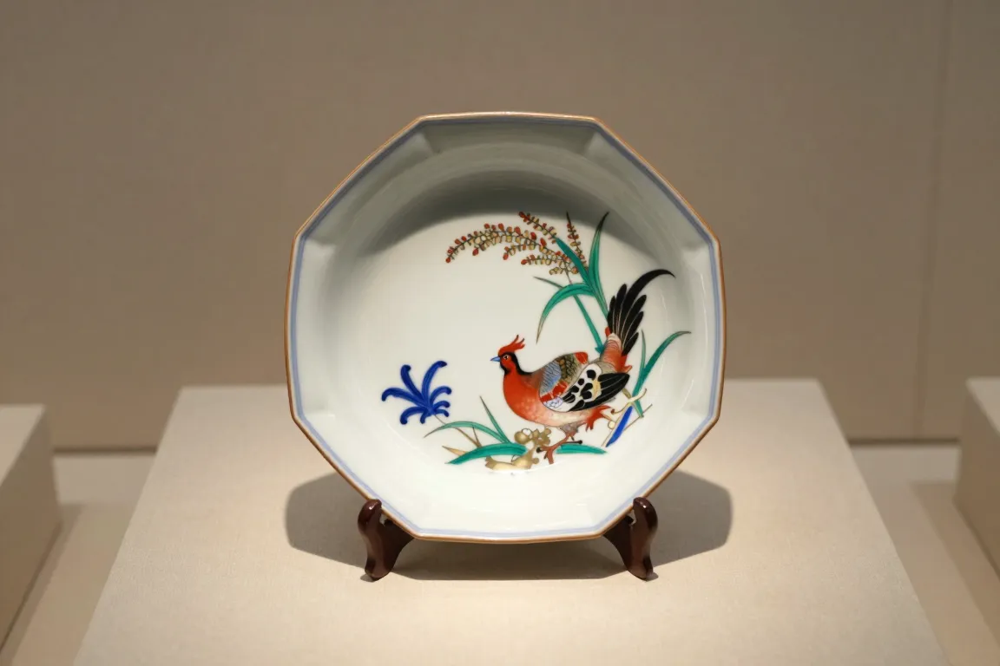

Japanese export porcelain from Arita. Kakiemon ware has a milk-white body and a spare, asymmetric overglaze design; Imari ware is dense, with blue under the glaze and red and gold over it.

Core thesis
A white porcelain can carry two styles of decoration: a spare picture in the open white, and a crowded design in blue, red and gold.
Design principles
Make a milk-white body, called nigoshide, from Arita clay for the Kakiemon type.
Leave large areas of the white body empty and place the design off-centre.
Paint overglaze enamels in red, green, blue, yellow and black, and fire at 800 °C in a muffle kiln.
Use a spare, graceful design of flowering branches, birds, tigers and the quail and millet.
For Imari, paint underglaze blue first, then red and gold over it, so that the surface is full.
Fire the body and the glaze at 1300 °C, and the enamels at 800 °C, in a third firing.
Use lobed edges and brown-edged rims (kuchibeni) on dishes and bowls.
Anti-patterns
A centred, symmetrical design in the Kakiemon type